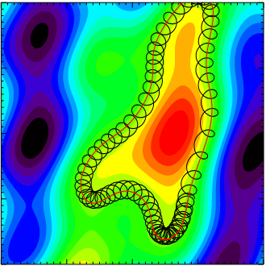
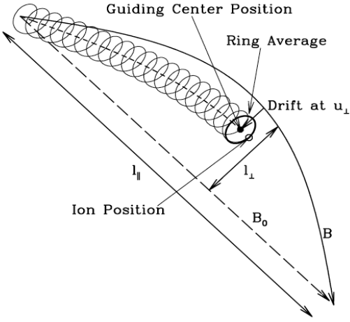

11 Gyrokinetics
This is taken from the slide given by Frank Jenko from Max-Planck-Institut für Plasmaphysik.
Gyrokinetics is a theory for describing plasmas at a much finer level. If kinetic effects (e.g. finite Larmor radius, Landau damping, magnetic trapping etc.) play a role, MHD is not applicable, and one has to use a kinetic description.
Once again we start from the Vlasov-Maxwell equation. Removing the fast gyromotion under the assumption \(\omega\ll\Omega\) leads to a dramatic speed-up. Thus we can think the basic element of charged rings as quasiparticles: it is described by gyrocenter coordinates and can keep the kinetic effects.
11.1 A Brief Historical Review
The word “gyrokinetics” appeared in the literature in the late 1960s, first proposed by Rutherford, Frieman, Taylor and Hastie. The goal is to provide an adequate formalism for the linear kinetic drift waves study in general magnetic configurations, including finite Larmor radius effects. The first nonlinear set of equations for the perturbed distribution function \(\delta f\) was given by Friemann and Liu Chen in 1982, who also introduced the gyrokinetic ordering. Gyrokinetic theory is based on Hamiltonian methods, which means that from a Lagrangian description, we remove the gyro-angle dependency by the change of coordinate systems to describe the equation of motion.
11.2 Coordinate Transformation
We perform the following coordinate transformation from the charged particle’s phase space (\(\mathbf{x},\mathbf{v}\)) to the corresponding guiding-center phase space (\(\mathbf{X},\mathbf{V}\)), where:
\[ \begin{aligned} \mathbf{X} = \mathbf{X}_\perp + X_\parallel \mathbf{b}_0,\quad \mathbf{X}_\perp = \mathbf{x}_\perp + \mathbf{r}_L,\quad \mathbf{r}_L = \mathbf{v}\times\mathbf{b}_0 / \Omega_c \end{aligned} \]
\[ \mathbf{V} = [\epsilon=v^2/2, \mu=v_\perp^2/2B_0, \sigma=\text{sgn}(v_\parallel)] \]
Here, \(\mathbf{b}_0 = \mathbf{B}_0/B_0\), \(\mathbf{r}_L\) is the gyroradius vector, \(v_\parallel=\mathbf{v}\cdot\mathbf{b}_0\), \(\mu\) is the magnetic moment adiabatic invariant and, assuming there is no equilibrium electrostatic potential, \(\epsilon\) is an equilibrium constant of motion.
In the guiding-center phase space, charged particle dynamics is naturally separated into the fast cyclotron motion and the slow guiding-center motion. One can then apply the gyrokinetic orderings and systematically average out the fast cyclotron motion (i.e., the gyrophase averaging) and obtain the asymptotically dominant (in terms of the smallness parameter \(\epsilon\)) perturbed distribution function response. This perturbed distribution function in the guiding-center phase space can then be inversely transformed back to the charged particle phase space and applied toward the field equations (i.e., Maxwell’s equations) for a self-consistent kinetic description.
- Obtain Vlasov equation in the guiding center coordinates.
- Obtain Maxwell’s equations in the guiding center coordinates.
Why do we need extra steps before using Maxwell’s equations? It is because in Maxwell’s equations the particle information (\(\rho, \mathbf{j}\)) are described not in the guiding center coordinates. The distribution we obtain from Vlasov equation must be transformed back to ordinary coordinates and then we can do the moment integral.
In the guiding center coordinates, density and current density can be expressed as
\[ n = \bar{N}_0 + \bar{\nabla}\cdot\Big( \frac{c\bar{N}_0}{B\Omega}\bar{\nabla}_\perp \delta\phi \Big) + \frac{\bar{N}_0\delta B_\parallel}{B} + \int \bar{F}_1d\mathbf{p} \tag{11.1}\]
\[ \begin{aligned} \mathbf{j} &= -\frac{\bar{N}_0 q^2}{cm}\delta A_\parallel\hat{b} + \int\frac{q \bar{\mathbf{P}}_\parallel}{m}\hat{b}\mathrm{d}\bar{\mathbf{P}} + \frac{cq\bar{N}_0}{B}\hat{b}\times\bar{\nabla}\delta\phi + \frac{3c^2\bar{N}_0\bar{T}}{2B^2\Omega}\hat{b}\times\bar{\nabla}\bar{\nabla}_\perp^2\delta\phi \\ &+ \frac{2c\bar{N}_0 \bar{T}}{B^2}\hat{b}\times\bar{\nabla}\delta B_\parallel + \frac{\hat{b}}{B}\times\bar{\nabla}(c\bar{N}_0\bar{T}) + \hat{b}\times\bar{\nabla}\int c\bar{\mu}\bar{F}_1 \mathrm{d}\bar{\mathbf{P}} \end{aligned} \tag{11.2}\]
Note that
- In Vlasov equation in the guiding center coordinates, the \(\mathbf{E}\times\mathbf{B}\) drift, gradient drift and curvature drift all appears but the polarization drift is missing.
- In Equation 11.1, only the polarization term correction appears. From Hamilton’s mechanics, all term that has a explicit time dependency will not contribute here since it will break the energy conservation of the system.
11.3 The Gyrokinetic Ordering
11.3.1 From Kinetics to Gyrokinetics

Figure 11.1 shows the basic idea of gyrokinetic approximation. There is a strong magnetic field pointing into the plane. The electrostatic potential fluctuations are shown by the colored contours. The particle orbit is composed of two parts: a fast gyromotion and a slow \(\mathbf{E}\times\mathbf{B}\) drift. In gyrokinetics we simply remove the fast gyromotion and introduce charged rings as quasiparticles, i.e. go from particle to gyrocenter coordinates.

- Slow time variation as compared to the gyromotion time scale:
\[ \omega/\Omega_i \ll 1 \]
- Spatial equilibirum scale much larger than the Larmor radius:
\[ r_L/L\ll 1 \]
- Strong anisotropy, i.e. only perpendicular components of the fluctuating quantities can be large:
\[ k_\parallel/k_\perp \ll 1 \]
- Small amplitude perturbations, i.e. energy of perturbation much smaller than the thermal energy:
\[ e\phi/k_BT_e \ll 1 \]
There exists a natural smallness parameter, \(\epsilon=r_L/L\), which we are going to use in the ordering. In magnetically confined plasmas, typically we have \(\epsilon\lesssim\mathcal{O}(10^{-2})\ll 1\).
\[ \frac{\omega}{\Omega}\sim\frac{r_L}{L}\sim\frac{k_\parallel}{k_\perp}\sim\frac{\delta F}{F_0}\sim\frac{\delta T}{T_0}\sim\frac{\delta n}{n_0}\sim\frac{|\delta \mathbf{B}|}{|\mathbf{B}_0|}\sim\frac{q\delta\phi}{T}\sim\epsilon \]
Usually low-frequency (\(|\omega/\Omega_i|\sim\epsilon\)) but short-wavelength (\(k_\perp r_L \sim 1\)) fluctuations are of interest in gyrokinetics. To include Landau resonance (???),
\[ k_\parallel v_\parallel\sim \omega,\quad\text{or}\quad |k_\perp r_i|\sim 1 \]
Noting, furthermore, for \(|k_\perp r_i|\sim 1\) and the ratio of plasma ion pressure to the background magnetic field energy density \(\beta_i \lesssim 1\):
\[ \beta = \frac{P_{0i}}{P_{0B}} = \frac{m_i n_i v_{\perp i}^2/2}{B_0^2/2\mu_0} = \frac{v_{\perp i}^2}{v_A^2} \]
\[ \bigg\lvert \frac{\omega}{k_\perp v_A} \bigg\rvert \sim \bigg\lvert \frac{\omega}{\Omega_i} \bigg\rvert \bigg\lvert \frac{1}{k_\perp r_{iL}} \bigg\rvert \beta_i^{1/2} \lesssim \epsilon \]
i.e. fast waves are systematically suppressed in the gyrokinetic orderings.
11.4 A Lagriangian Approach
If the Lagriangian of a dynamical system is known, e.g. for charged particle motion in non-canonical coordinates \((\mathbf{x},\mathbf{v})\):
\[ \begin{aligned} L &= \Big(\frac{e}{c}\mathbf{A}(\mathbf{x},t) + m\mathbf{v}\Big)\cdot\dot{\mathbf{x}} - H(\mathbf{x},\mathbf{v}) \\ H &= \frac{m}{2}v^2 + e\phi(\mathbf{x},t) \end{aligned} \]
with \(\mathbf{B} = \nabla\times\mathbf{A}\) and \(\mathbf{E} = -\nabla\phi - \partial_t \mathbf{A}/c\). The equation of motion are given by the Lagrange equations (I almost forget everything from theoretical mechanics…):
\[ \frac{\mathrm{d}}{\mathrm{d}t}\frac{\partial L}{\partial \dot{q}_i} - \frac{\partial L}{\partial q_i} = 0,\quad i=1,...,6 \]
For charged particles,
\[ \frac{\mathrm{d}}{\mathrm{d}t}\frac{\partial L}{\partial\dot{\mathbf{v}}} - \frac{\partial L}{\partial\mathbf{v}} = 0 ? \]
\[ \begin{aligned} \dot{\mathbf{x}} &= \mathbf{v} \\ \dot{\mathbf{v}} &= \frac{e}{m}(\mathbf{E} + \mathbf{v}\times\mathbf{B}) \end{aligned} \]
In gyrokinetics we add low-frequency, anisotropic, small-amplitude fluctuations:
\[ \frac{\omega}{\Omega_i} \sim \frac{k_\parallel}{k_\perp}\sim\frac{e\phi}{T_e} \sim \epsilon \]
We need a transition from particle coordinates \((\mathbf{x},\mathbf{v})\) to guiding center coordinates \((\mathbf{R},v_\parallel, \mu, \varphi)\). The easy way is to construct a new Lagrangian using Lie transforms (???)
\[ \Gamma = \Big( mv_\parallel\hat{b}_0 + \frac{e}{c}\bar{\mathbf{A}}_{1\parallel}\hat{b}_0 + \frac{e}{c}\mathbf{A}_0 \Big)\cdot \mathrm{d}\mathbf{X} + \frac{mc}{e}\mu \mathrm{d}\theta - \Big( \frac{m}{2}v_\parallel^2 + \mu B_0 + \mu \bar{B}_{1\parallel} + e\bar{\phi}_1 \Big)\mathrm{d}t \]
where \(\mu\) is the magnetic moment, \(\theta\) is the gyroangle, and the overbar denotes a gyroaveraging operation. This gives the Euler-Lagrange equations
\[ \begin{aligned} \dot{\mathbf{X}} &= v_\parallel\hat{b} + \frac{B}{B_\parallel^\ast}\Big[ \frac{v_\perp}{B}\bar{\mathbf{B}}_{1\perp} + \frac{c}{B^2}\bar{\mathbf{E}}_1\times\mathbf{B} + \frac{\mu}{m\Omega}\hat{b}\times\nabla(B+\bar{B}_{1\parallel}) + \frac{v_\parallel^2}{\Omega}(\nabla\times\hat{b})_\perp \Big] \\ \dot{v}_\parallel &= \frac{\dot{\mathbf{X}}}{mv_\parallel}\cdot\big( e\bar{\mathbf{E}}_1 - \mu\nabla(B+\bar{B}_{1\parallel}) \big) \\ \dot{\mu} &= 0 \end{aligned} \tag{11.3}\]
Equation 11.3 contains all the drifts we have seen in Chapter 4.
Applying the gyrokinetic approximation, the effective gyroaveraged potential over one gyroperiod can be written using Fourier transform (???):
\[ \begin{aligned} \phi^{\text{eff}}(\mathbf{x},r_L) &= \frac{1}{2\pi} \int_0^{2\pi}\mathrm{d}\theta \phi(\mathbf{x}+\mathbf{r}_L) \\ &= \frac{1}{(2\pi)^2}\int_{-\infty}^{\infty}\mathrm{d}\mathbf{k}e^{i\mathbf{k}\cdot\mathbf{x}}\phi(\mathbf{k})J_0(kr_L) \end{aligned} \]
where \(J_0\) is the zeroth order Bessel function.
11.4.1 Linear Gyrokinetics
We shall limit our considerations to that of a simple uniform plasma with an isotropic Maxwellian equilibrium distribution function. Assuming, furthermore, \(\beta\) (ratio between the plasma and magnetic pressures) \(\ll 1\), such that there is negligible magnetic compression, the particle velocity distribution is then given by:
\[ f(\mathbf{x},\mathbf{v},t) = f_M(\epsilon) + \delta f(\mathbf{x},\mathbf{v},t) \]
where \(f_M(\epsilon)=n_0/(\pi^{3/2}v_t^3)\exp(-\epsilon/v_t^2)\) is the Maxwellian distribution function, \(v_t\) is the thermal speed (HOW TO UNDERSTAND THIS???):
\[ \delta f = \frac{q}{T}f_M(\epsilon)\delta\phi + e^{-\mathbf{r}_L\cdot\nabla}\delta g \]
\(T=mv_t^2/2\), \(\delta g\) satisfies the following linear gyrokinetic equation:
\[ \begin{aligned} \Big( \frac{\partial}{\partial t}+v_\parallel\mathbf{b}_0\cdot\nabla \Big)\delta g = \frac{q}{T}f_M(\epsilon)\frac{\partial} {\partial t}\left< \delta L_g \right>_\alpha \\ \delta L_g = e^{-\mathbf{r}_L\cdot\nabla}\delta L \\ \delta L = \delta \phi - v_\parallel \delta A_\parallel/c \end{aligned} \tag{11.4}\]
and \(<...>_\alpha\) denotes averaging over the gyrophase angle, \(\alpha\). Here, the field variables are the scalar and vector potentials, \(\delta\phi\) and \(\delta\mathbf{A}\), with \(\delta A_\parallel=\delta\mathbf{A}\cdot\mathbf{b}_0\) and the \(\nabla\cdot\delta\mathbf{A}=0\) Coulomb gauge. The operator \(e^{-\mathbf{r}_L\cdot\nabla}\), meanwhile, represents the transformation between the particle and guiding center positions.
The corresponding field equations are the Poisson’s equation and the parallel Ampère’s law, \(\nabla^2 \delta A_\parallel = -4\pi\delta J_\parallel/c\). In the low-frequency and \(|k\lambda_D|^2\ll 1\) limit with \(\lambda_D\) being the Debye length, Poisson’s equation can be approximated as the quasi-neutrality condition; \(\sum_j n_{0j}q_j<\delta f_j>_v\simeq 0\). Here, \(<...>_v = \int \mathrm{d}\mathbf{v} (...)\) is the velocity-space integral, and subscript \(j\) runs over the particle species. Meanwhile, substituting the parallel Ampère’s law into the \(\nabla\cdot\delta\mathbf{J}\simeq 0\) quasi-neutrality condition as derived by Equation 11.4 yields a generalized linear gyrokinetic vorticity equation, which is often convenient to use in studying shear/kinetic Alfvén wave dynamics.
Linear kinetic Alfvén wave properties
(WARNING: SUPER HARD TO FOLLOW!) For plane wave \(\omega,\mathbf{k}\) perturbations, Equation 11.4 gives:
\[ \delta g_\mathbf{k} = -\frac{q}{T}f_M J_0(k_\perp \mathbf{r}_L) \frac{\omega}{k_\parallel v_\parallel - \omega}\Big( \delta\phi - \frac{v_\parallel}{c}\delta A_\parallel \Big)_\mathbf{k} \]
\(J_0\) is the Bessel function and \(J_0(k_\perp \mathbf{r}_L)\) corresponds to the gyro-averaging of the coordinate transformation, that is:
\[ <\exp(-\mathbf{r}_L\cdot\nabla)>_\alpha = J_0(k_\perp r_L) \]
In SAW/KAW analyses, it is sometimes convenient to introduce an effective induced parallel potential defined by \(\mathbf{b}_0\cdot\nabla\delta\Psi = -\partial_t \delta A_\parallel/c\) or:
\[ \delta\Psi_\mathbf{k} = \omega\delta A_{\parallel\mathbf{k}} / (ck_\parallel) \]
\(\delta\Psi\), thus, gives rise to the induced parallel electric field; that is, the net parallel electric field is given by:
\[ \begin{aligned} \delta E_\parallel &= -\mathbf{b}_0\cdot\nabla(\delta\phi-\delta\Psi)\quad\text{or} \\ \delta E_{\parallel\mathbf{k}} &= -ik_\parallel(\delta\phi-\delta\Psi)_\mathbf{k} \end{aligned} \]
The quasi-neutrality condition then straightforwardly yields: (Chen and Hasegawa 1991)
\[ \sum_j\Big( \frac{n_0 q^2}{T_0} \Big)_j \{ \delta\phi_\mathbf{k} + \Gamma_{0kj}[\xi_{kj}Z_{kj}\delta\phi_\mathbf{k} - (1+\xi_{kj}Z_{kj}\delta\Psi_\mathbf{k})] \} = 0 \tag{11.5}\]
Here, \(\xi_{kj}=\omega/|k_\parallel|v_{tj},Z_{kj}=Z(\xi_{kj})\) with \(Z\) being the well-known plasma dispersion function (Equation 8.12), and \(\Gamma_{0kj} = I_0(b_{kj})\exp(-b_{kj})\) with \(I_0\) the modified Bessel function and \(b_{kj}=k_\perp^2 r_{Lj}/2 = k_\perp^2(T_j/m_j)/\Omega_j^2\). The linear gyrokinetic vorticity equation, meanwhile, is given by: (Chen and Hasegawa 1991)
\[ i\frac{c^2}{4\pi\omega}k_\parallel^2 k_\perp^2 \delta\Psi_\mathbf{k} - i \sum_j\Big( \frac{n_0q^2}{T_0} \Big)_j (1-\Gamma_{0kj})\omega\delta\phi_\mathbf{k} = 0 \tag{11.6}\]
Nothing that, for KAW, \(|k_\perp r_{Li}| \sim\mathcal{O}(1)\) and \(|k_\perp r_{Le}|\ll 1\) and, thus, \(\Gamma_{0ke}\simeq 1\), Equation 11.5 and Equation 11.6 then become
\[ \begin{aligned} \epsilon_{s\mathbf{k}} \delta\phi_\mathbf{k} &= [1+\xi_{ke}Z_{ke}+\tau(1+\Gamma_k \xi_{ki}Z_ki)]\delta\phi_\mathbf{k} \\ &= [1+\xi_{ke}Z_{ke}+\tau\Gamma_k(1+\xi_{ki}Z_{ki})]\delta\Psi_\mathbf{k} \end{aligned} \tag{11.7}\]
and
\[ \omega^2 \delta\phi_\mathbf{k} = k_\parallel^2 v_A^2 \frac{b_k}{1-\Gamma_k}\delta\Psi_\mathbf{k} \tag{11.8}\]
Here, \(\tau=T_{0e}/T_{0i}, b_k=b_{ki}, \Gamma_k=\Gamma_{0ki}\), and \(\epsilon_{s\mathbf{k}}\) is the dielectric constant for the slow-sound (ion-acoustic) wave (SSW).
It is also instructive, as done in some literatures, to define the effective parallel potential, \(\delta\phi_{\parallel\mathbf{k}}=\delta\phi_\mathbf{k} - \delta\Psi_\mathbf{k}\), and rewrite Equation 11.7 and Equation 11.8 as
\[ \epsilon_{s\mathbf{k}} \delta\phi_{\parallel\mathbf{k}} = -\tau(1-\Gamma_k)\delta\Psi_\mathbf{k} \tag{11.9}\]
and
\[ \Big[ \omega^2 - k_\parallel^2v_A^2\frac{b_k}{1-\Gamma_k} \Big] \delta\Psi_\mathbf{k} = -\omega^2\delta\phi_{\parallel\mathbf{k}} \tag{11.10}\]
Equation 11.9 and Equation 11.10 demonstrate the coupling between SAW and SSW via the finite \(|k_\perp r_{Ls}|\) term. In the \(|k_\perp r_{Li}|\sim\mathcal{O}(1)\) short-wavelength limit, SAW evolves into KAW due to both the finite \(|k_\perp r_{Li}|\) and \(|k_\perp r_{Ls}|\) effects. (???) More specifically, the coupled KAW-SSW dispersion relation becomes
\[ \omega_\mathbf{k}^2\Big[ 1-\frac{\tau(1-\Gamma_k)}{\epsilon_{s\mathbf{k}}} \Big] = k_\parallel^2 v_A^2 \frac{b_k}{1-\Gamma_k} \tag{11.11}\]
Let us concentrate on the KAW branch and, to further simplify the analysis, assume \(1\gg \beta_i\sim\beta_e\gg m_e/m_i\). With \(|\omega|\sim|k_\parallel v_A|\), we then have \(|\xi_{ki}|=|\omega/k_\parallel v_{ti}|\sim\beta_i^{-1/2}\gg 1 \gg |\xi_{ke}|\sim(m_e/m_i\beta_e)^{1/2}\), and, keeping only the lowest order \(\mathbf{O}(1)\) terms:
\[ \epsilon_{s\mathbf{k}} \simeq 1+\tau(1-\Gamma_k) \equiv \sigma_k \]
From Equation 11.11, we then have
\[ \omega_{\mathbf{k}}^2 \simeq k_\parallel^2 v_A^2\frac{\sigma_k b_k}{1-\Gamma_k} \tag{11.12}\]
As to wave polarizations, which are useful for wave identification in observations, we can readily derive:
\[ \bigg\lvert \frac{c\delta\mathbf{E}_\perp}{\delta\mathbf{B}_\perp} \bigg\rvert = v_A \Big[ \frac{b_k}{\sigma_k(1-\Gamma_k)}\Big]^{1/2} \tag{11.13}\]
and
\[ \bigg\lvert \frac{c\delta E_\parallel}{\delta\mathbf{B}_\perp} \bigg\rvert = v_A \bigg\lvert \frac{k_\parallel}{k_\perp}\tau \bigg\rvert\Big[ \frac{b_k(1-\Gamma_k)}{\sigma_k} \Big]^{1/2} \tag{11.14}\]
ADD PLOTS for Equation 11.12, Equation 11.13, and Equation 11.14!!!
Equation 11.14 show that, for a fixed \(|k_\parallel/k_\perp|, |\delta E_\parallel/\delta\mathbf{B}_\perp|\) increases with \(b_k\). Since wave-particel energy and momentum exchanges are proportional to \(|\delta E_\parallel|\), short-wavelength KAW are, thus, expected to play crucial roles in the heating, acceleration, and transport of charged particles.
In addition to having a significant \(\delta E_\parallel\), another important property of KAW, in contrast to SAW, is that KAW has a finite perpendicular (to \(\mathbf{B}_0\)) group velocity, \(\mathbf{v}_{g\perp}\). Assuming \(|k_\perp r_{Li}|^2\ll 1\), we have, letting \(\omega_A^2\equiv k_\parallel^2 v_A^2\):
\[ \omega_\mathbf{k}^2 \simeq \omega_A^2(1+k_\perp^2 \hat{r}^2) \tag{11.15}\]
where
\[ \hat{r}^2 = (3/4 + \tau)r_{Li}^2 \tag{11.16}\]
Thus
\[ \mathbf{v}_{g\perp}=\frac{\partial \omega_\mathbf{k}}{\partial \mathbf{k}_\perp}\simeq \frac{\omega_A^2}{\omega_\mathbf{k}}\hat{r}^2\mathbf{k}_\perp \tag{11.17}\]
Linear mode conversion of KAW
Equation 11.15 has a significant implication in non-uniform plasmas. Consider, again, a slab plasma with a non-uniform \(\omega_A^2(x)\) and \(k_\perp^2 = k_x^2(x)\) being the WKB wavenumber in the non-uniformity \(x\)-direction. Equation 11.15 then indicates that KAW is propagating (\(k_x^2>0\)) in the \(\omega_\mathbf{k}^2>\omega_A^2(x)\) region, and it is cutoff (\(k_x^2<0\)) in the \(\omega_\mathbf{k}^2<\omega_A^2(x)\) region. That \(\mathbf{v}_{g\perp}\) is finite also suggests that, in constrast to SAW, an initial smooth perturbation will not only evolve into short wavelengths, but also propagate toward the lower \(\omega_A^2(x)\) region. These features are illustrated in Figure 11.3(b); where the spatial-temporal evolution of KAW is solved explicitly according to the following wave equation: (DO IT MYSELF!!!)
\[ \Big[ \hat{r}^2\frac{\partial^2}{\partial x^2} - 1 - \frac{1}{\omega_A^2(x)}\frac{\partial^2}{\partial t^2} \Big] \delta B_y(x,t) = 0 \tag{11.18}\]
Equation 11.18 can be readily derived from Equation 11.15 by letting \(\omega_\mathbf{k}=i\partial/\partial t\) and \(k_\perp=-i\partial/\partial x\). The spatial profile of \(\omega_A^2(x)/\omega^2 = 1/(1+x^2/L^2)\) is shown in Figure 11.3(a), with \(L\) indicating the profile length-scale, so that the KAW wave-packet frequency is assumed to be consistent with the SAW frequency at \(x=0\). Figure 11.3(b) shows the propagation of the KAW wave-packet in the direction of radial non-uniformity, consistent with Equation 11.17.

That there exists a finite perpendicular group velocity also implies, in the steady state, the removal of “singular” resonance and linear mode conversion process (Hasegawa and Chen 1976, see also Chapter 12). More specifically, the corresponding wave equation is given by:
\[ \Big[\hat{r}^2\frac{\partial^2}{\partial x^2} + \Big( \frac{\omega_0^2}{\omega_A^2(x)} - 1 \Big) \Big]\delta\hat{B}_y(x) = \delta\hat{B}_{y0} \tag{11.19}\]
Here, \(\omega_0\) is the external driving frequency. In the ideal SAW (\(\hat{r}\rightarrow 0\)) limit, there is the resonance singularity at \(x_0\), where \(\omega_0^2 = \omega_A^2(x_0)\). Noting that, near \(x=x_0\), \(\omega_A^2(x)\simeq \omega_0^2 + (\omega_A^2)^\prime(x_0)(x-x_0)\equiv \omega_0^2 - (\omega_0^2/L_A)(x-x_0)\), Equation 11.19 can be approximated as an inhomogeneous Airy equation and solved analytically. Equation 11.19 can then be solved, with appropriate boundary conditions, by connecting the solutions valid away from the \(x=x_0\) resonance layer via the analytic solution of the inhomogeneous Airy equation valid near \(x=x_0\) (Hasegawa and Chen 1975, 1976). The solutions away from the singular layer are given by:
\[ \delta\hat{B}_y(x) = \left\{ \begin{array}{lr} \frac{\delta\hat{B}_{y0}}{\epsilon_A(x)} & \text{for }\omega_0^2 < \omega_A^2(x) \\ \frac{\delta\hat{B}_{y0}}{\epsilon_A(x)} - \frac{\sqrt{\pi}\delta\hat{B}_{y0}}{(\hat{r}/L_A)^{1/2}}\Big( \frac{\hat{r}^2}{\epsilon_A(x)} \Big)^{1/4}\exp\Big[ i\int_{x_0}^x \Big( \frac{\epsilon_A(x^\prime)}{\hat{r}^2} \Big)^{1/2} \mathrm{d}x^\prime +i\frac{\pi}{4} \Big] & \text{for }\omega_0^2 > \omega_A^2(x) \end{array} \right. \tag{11.20}\]
where
\[ \epsilon_A(x) = \frac{\omega_0^2}{\omega_A^2(x)} - 1 \]
The corresponding numerical solutions are plotted in Figure 11.4. (I DON’T UNDERSTAND!!!)
Both the analytical results and mode conversion process exhibit two important features. One is, instead of being singular, the amplitude at \(x=x_0\) (where \(\omega_A(x_0) = \omega_0\)) is amplified by the Airy swelling factor \((L_A/\hat{r})^{2/3}\). Here, we recall \(L_A\) is the scale length of \(\omega_A\) and \(\hat{r}\), from Equation 11.16, is of \(\mathcal{O}(r_{Li})\), and, hence, \(|L_A/\hat{r}|\gg 1\). The other is the singularity at \(x=x_0\) is being replaced by the Airy scale length \(\Delta_0=(\hat{r}^2L_A)^{1/3}\). Recalling, from Equation 7.29, \(|k_x|\simeq |\omega_A^\prime| t\simeq (\omega/L_A)t\), there then exists a KAW formation time scale given by \((\omega_0/L_A)t_0\simeq 1/\Delta_0\); i.e., \(\omega_0 t_0\simeq (L_A/\hat{r})^{2/3}\). Taking, for an example, a typical laboratory plasma, \(L_A/\hat{r}\simeq\mathcal{O}(10^3)\), we have \(\omega_0 t_0\simeq\mathcal{O}(10^2)\), suggesting that it is reasonable to anticipate, in the presence of SAW continuous spectrum, the appearance of KAW in such plasmas.
The main mode identification method for KAWs is based on the measurement of the wave polarization, \(|c\delta\mathbf{E}_\perp/v_A\delta\mathbf{B}_\perp|\). Observations can be found from Van Allen Probes in the Earth’s inner magnetosphere and the Cluster satellites in the solar wind.
11.4.2 Nonlinear Gyrokinetics
The idea of deriving the gyrokinetic equations is very similar to the derivation of 5/10-moment equations. Extra care is needed because of the coordinate transformation to the guiding center coordinates. For species \(\alpha\),
\[ \frac{\partial f_\alpha}{\partial t} + \mathbf{v}\cdot\frac{\partial f_\alpha}{\partial\mathbf{x}} + \frac{q_\alpha}{m_\alpha}\Big( \mathbf{E}+\frac{\mathbf{v}\times\mathbf{B}}{c} \Big)\cdot\frac{\partial f_\alpha}{\partial \mathbf{v}} = \sum_{\alpha^\prime} C_{\alpha\alpha^\prime}(f_\alpha, f_\alpha^\prime) \]
We expand \(f\) in different orders:
\[ f = f_0 + \delta f = f_0 + f_1 + f_2 + ... \]
and treat the velocity as a first order quantity. For simplicity, we now ignore the species subscript \(\alpha\). Separating the equilibrium and perturbation terms, we have
\[ \begin{aligned} &\frac{\partial f_0}{\partial t} + \frac{\partial \delta f}{\partial t} \\ &+ \mathbf{v}_\perp\cdot\frac{\partial \delta f}{\partial\mathbf{x}} + \mathbf{v}_\parallel\cdot\frac{\partial \delta f}{\partial\mathbf{x}} \\ &+ \frac{q}{m}\Big( \delta\mathbf{E}+\frac{\mathbf{v}\times\mathbf{B}_0}{c} + \frac{\mathbf{v}\times\delta\mathbf{B}_0}{c} \Big)\cdot\frac{\partial f_0}{\partial \mathbf{v}} + \frac{q}{m}\Big( \delta\mathbf{E}+\frac{\mathbf{v}\times\mathbf{B}_0}{c}+\frac{\mathbf{v}\times\delta\mathbf{B}}{c} \Big)\cdot\frac{\partial \delta f}{\partial \mathbf{v}} = \\ &C(f_0, f_0) + C(f_0, \delta f) + C(\delta f, f_0) + C(\delta f, \delta f) \end{aligned} \]
Based on the gyrokinetic ordering,
\[ \begin{aligned} \frac{\partial f_0}{\partial t} \sim \omega_{\text{heat}}f_0 \sim \epsilon^3\Omega f_0 \\ \frac{\partial \delta f}{\partial t}\sim \omega\delta f\sim \epsilon^2\Omega f_0 \\ \mathbf{v}_\perp\cdot\frac{\partial \delta f}{\partial\mathbf{x}}\sim v_{\text{th}}k_\perp\delta f\sim\epsilon\Omega f_0 \\ \mathbf{v}_\parallel\cdot\frac{\partial \delta f}{\partial\mathbf{x}}\sim v_{\text{th}}k_\parallel\delta f\sim\epsilon^2\Omega f_0 \\ \frac{q}{m}\nabla_\perp\delta\phi\cdot\frac{\partial f_0}{\partial \mathbf{v}}\sim \frac{q}{m}k_\perp \delta\phi\frac{f_0}{v_{\text{th}}} \sim \epsilon\Omega f_0 \\ \frac{q}{m}\nabla_\parallel\delta\phi\cdot\frac{\partial f_0}{\partial \mathbf{v}}\sim \frac{q}{m}k_\parallel \delta\phi\frac{f_0}{v_{\text{th}}} \sim \epsilon^2\Omega f_0 \\ \frac{q}{mc}\frac{\partial\delta\mathbf{A}}{\partial t}\cdot\frac{\partial f_0}{\partial\mathbf{v}}\sim\frac{q}{m}\omega\delta A\frac{f_0}{v_{\text{th}}}\sim \epsilon^2\Omega f_0 \\ \frac{q}{mc}(\mathbf{v}\times\mathbf{B}_0)\cdot\frac{\partial f_0}{\partial \mathbf{v}}\sim\frac{q}{mc}v_{\text{th}}B_0 \frac{f_0}{v_{\text{th}}}\sim \Omega f_0 \\ \frac{q}{mc}(\mathbf{v}\times\delta\mathbf{B})\cdot\frac{\partial f_0}{\partial \mathbf{v}}\sim\frac{q}{mc}v_{\text{th}}\delta B \frac{f_0}{v_{\text{th}}}\sim \epsilon\Omega f_0 \\ \frac{q}{m}\nabla_\perp \delta\phi\cdot\frac{\partial\delta f}{\partial\mathbf{v}}\sim\frac{q}{m}k_\perp\delta\phi\frac{\delta f}{v_{\text{th}}}\sim\epsilon^2\Omega f_0 \\ \frac{q}{m}\nabla_\parallel \delta\phi\cdot\frac{\partial\delta f}{\partial\mathbf{v}}\sim\frac{q}{m}k_\parallel\delta\phi\frac{\delta f}{v_{\text{th}}}\sim\epsilon^3\Omega f_0 \\ \frac{q}{mc}\frac{\partial\delta\mathbf{A}}{\partial\mathbf{v}}\sim\frac{q}{m}\omega\delta A\frac{\delta f}{v_{\text{th}}}\sim \epsilon^3\Omega f_0 \\ \frac{q}{mc}(\mathbf{v}\times\mathbf{B}_0)\cdot\frac{\partial \delta f}{\partial\mathbf{v}}\sim\frac{q}{mc}v_{\text{th}}B_0\frac{\delta f}{v_{\text{th}}}\sim\epsilon\Omega f_0 \\ \frac{q}{mc}(\mathbf{v}\times\delta\mathbf{B})\cdot\frac{\partial \delta f}{\partial\mathbf{v}}\sim\frac{q}{mc}v_{\text{th}}\delta B\frac{\delta f}{v_{\text{th}}}\sim\epsilon^2\Omega f_0 \end{aligned} \]
\(\omega_{\text{heat}}\) is ???
The zeroth order equation is
\[ \frac{q}{mc}(\mathbf{v}\times\mathbf{B}_0)\cdot\frac{\partial f_0}{\partial\mathbf{v}} = \Omega(\mathbf{v}_\perp\times\hat{b}_0)\cdot\frac{\partial f_0}{\partial\mathbf{v}} = 0 \]
If we tranform to a cylindrical coordinates in velocity space (Equation 10.8), this can be written as
\[ (\mathbf{v}_\perp\times\hat{b}_0)\cdot\frac{\partial f_0}{\partial\mathbf{v}} = -\frac{\partial f_0}{\partial\theta} = 0 \]
This means that the equilibrium distribution function \(f_0\) does not depend on the gyrophase, i.e. is gyrotropic.
The first order equation is
\[ \mathbf{v}_\perp\cdot\frac{\partial \delta f_1}{\partial\mathbf{x}} + \frac{q}{m}\Big( -\nabla_\perp\delta\phi+\frac{\mathbf{v}\times\delta\mathbf{B}}{c} \Big)\cdot\frac{\partial f_0}{\partial\mathbf{v}} + \frac{q}{mc}(\mathbf{v}\times\mathbf{B}_0)\cdot\frac{\partial \delta f_1}{\partial\mathbf{v}} = C(f_0, f_0) \]
Muliplying with \((1+\ln f_0)\) and integrating over phase space, we get
\[ \int \ln(f_0)C(f_0, f_0)\mathrm{d}\mathbf{x}\mathrm{d}\mathbf{v} = 0 \]
From the proof of Boltzmann’s H-theorem, we conclude:
\[ \begin{aligned} f_0 = f_{0,M}(v) = \frac{n_0}{\pi^{3/2}v_{\text{th}}^3}e^{-v^2/v_{\text{th}}^2} \\ C(f_{0,M}, f_{0,M}) = 0 \\ \frac{\partial f_{0,M}}{\partial\mathbf{v}} = -2f_{0,M}\frac{\mathbf{v}}{v_\text{th}^2} = -f_{0,M}m\frac{\mathbf{v}}{T} \end{aligned} \]
The equilibrium distribution is Maxwellian. The first order equation thus becomes (???)
\[ \mathbf{v}_\perp\cdot\frac{\partial \delta f_1}{\partial\mathbf{x}} - \Omega\frac{\partial\delta f_1}{\partial\theta} = -f_{0,M}\mathbf{v}\cdot\nabla_\perp\Big(\frac{q\delta\phi}{T}\Big) \]
The solution to this is a combination of a homogeneous solution and a particular solution. For the homogeneous part,
\[ \mathbf{v}_\perp\cdot\frac{\partial h}{\partial\mathbf{x}} - \Omega\frac{\partial h}{\partial\theta}\bigg\rvert_\mathbf{x} = 0,\, \mathbf{x} = \mathbf{X} + \mathbf{r}_L,\quad \Omega\frac{\partial h}{\partial\theta}\bigg\rvert_\mathbf{X}=0 \]
For the particular part, the solution is
\[ -q\delta \phi(\mathbf{x},t)f_0(\mathbf{v})/T \]
Thus the complete solution is
\[ \delta f_1(\mathbf{x},\mathbf{v},t) = h(\mathbf{X},v_\parallel,v_\perp,t) - q\delta\phi(\mathbf{x},t)f_0(\mathbf{v})/T \]
We still need an equation for \(h\) for closure. Therefore we have to go to the second order equation
\[ \begin{aligned} \frac{\partial\delta f_1}{\partial t}+v_\parallel\hat{b}_0\cdot\nabla\delta f_1 + \frac{q}{m}\Big( -\nabla_\perp \delta\phi + \frac{\mathbf{v}\times\delta\mathbf{B}}{c} \Big)\cdot\frac{\partial\delta f_1}{\partial\mathbf{v}} \\ - \frac{q}{m}(\nabla_\parallel \delta\phi)\frac{\partial f_0}{\partial v_\parallel} - \frac{q}{mc}\frac{\partial\delta\mathbf{A}}{\partial t}\cdot\frac{\partial f_0}{\partial \mathbf{v}} \\ + \mathbf{v}_\perp\cdot\nabla\delta f_2 + \frac{q}{mc}(\mathbf{v}\times\mathbf{B}_0)\cdot\frac{\partial\delta f_2}{\partial\mathbf{v}} \\ = C(\delta f_1, f_0) + C(f_0,\delta f_1) \end{aligned} \]
From particle coordinates to guiding center coordinates
\[ \begin{aligned} \frac{\partial h}{\partial t} + \frac{\mathrm{d}\mathbf{X}}{\mathrm{d}t}\cdot\frac{\partial h}{\partial\mathbf{X}} + \frac{q}{m}\Big( -\nabla_\perp\delta\phi + \frac{\mathbf{v}\times\delta\mathbf{B}}{c} \Big)\cdot\frac{\partial h}{\partial\mathbf{v}} = \\ C(h,f_0) + C(f_0, h) + \frac{q}{T}f_0\frac{\partial \chi}{\partial t} + \Omega\frac{\partial\delta f_2}{\partial\theta}\bigg\rvert_\mathbf{X} \end{aligned} \]
where \(\xi\equiv\delta\phi - \mathbf{v}\cdot\delta\mathbf{A}/c\).
For any quantity \(Q\), the gyrophase averaging at fixed guiding center position is
\[ \left< Q(\mathbf{x},\mathbf{v},t) \right>_\mathbf{X} \equiv \frac{1}{2\pi}\int_0^{2\pi}Q\Big( \mathbf{X}-\frac{\mathbf{v}\times\hat{b}_0}{\Omega},\mathbf{v},t \Big)\mathrm{d}\theta \]
We have
\[ \begin{aligned} \left< h(\mathbf{x},\mathbf{v},t) \right>_\mathbf{X} = h \\ \left< \mathbf{v}_\perp\cdot\nabla Q \right>_\mathbf{X} = -\Omega \left< \frac{\partial Q}{\partial\theta}\bigg\rvert_\mathbf{X} \right>_\mathbf{X} = 0 \end{aligned} \]
The equation for the gyrocenter distribution function \(h\) is then
\[ \frac{\partial h}{\partial t} + v_\parallel\hat{b}_0\cdot\frac{\partial h}{\partial\mathbf{X}} + \frac{c}{B_0}\Big( \hat{b}_0\times\frac{\partial\left<\chi\right>_\mathbf{X}}{\partial \mathbf{X}} \Big)\cdot\frac{\partial h}{\partial\mathbf{X}} = \left< C(h) \right>_\mathbf{X} + \frac{q}{T}f_0\frac{\partial <\chi>_\mathbf{X}}{\partial t} \]
The quasi-neutrality \(\sum_\alpha q_\alpha\delta n_\alpha = 0\) now becomes
\[ \begin{aligned} \sum_\alpha\Big[ -\frac{q_\alpha^2 n_{0\alpha}}{T_{0\alpha}}\delta\phi(\mathbf{x},t) + q_\alpha\int h_\alpha\Big( \mathbf{x}+\frac{\mathbf{v}\times\hat{b}_0}{\Omega_\alpha},\mathbf{v},t \Big)\mathrm{d}\mathbf{v} \Big] = 0 \\ \sum_\alpha\Big( -\frac{q_\alpha^2 n_{0\alpha}}{T_{0\alpha}}\delta\phi(\mathbf{x},t) + q_\alpha \int <h_\alpha>\mathrm{d}\mathbf{v}\Big) = 0 \end{aligned} \]
Last but not least we need the modified Ampère’s law:
\[ \nabla\times\delta\mathbf{B}(\mathbf{x},t) = \frac{4\pi}{c}\sum_\alpha q_\alpha \]
The distribution function now depends on 6 variables, \(f = f(\mathbf{X},v_\parallel,\mu;t)\). The Vlasov equation can be written as
\[ \frac{\partial f}{\partial t} + \dot{\mathbf{X}}\cdot\frac{\partial f}{\partial \mathbf{X}} + \dot{v_\parallel}\frac{\partial f}{\partial v_\parallel} = 0 \]
where \(\mathbf{X}\) is the gyrocenter position, \(v_\parallel\) is the parallel velocity, and \(\mu\) is the magnetic moment. The appropriate field equations are now
\[ \begin{aligned} \frac{n_1}{n_0} &= \frac{\bar{n}_1}{n_0} - (1- |I_0^2|)\frac{e\phi_1}{T} + |eI_0I_1|\frac{B_{1\parallel}}{B} \\ \nabla_\perp^2 A_{1\parallel} &= -\frac{4\pi}{c}\sum\bar{J}_{1\parallel} \\ \frac{B_{1\parallel}}{B} &= -\sum \epsilon_\beta\Big( \frac{\bar{p}_{1\perp}}{n_0 T} + |xI_0I_1|\frac{e\phi_1}{T} + |x^2I_1^2|\frac{B_{1\parallel}}{B} \Big) \end{aligned} \]
These equations remove the irrelevant space-time scales and become nonlinear 5D equations instead 6D.
11.5 Applications
Gyrokinetics has emerged as the standard approach to plasma turbulence.
Some issues under investigation where gyrokinetics may shed light on:
- Role of microturbulence in space physics?
- transport across boundary layers
- fast magnetic reconnection
- coronal and solar wind heating
- How does MHD turbulence dissipate energy?
- How do fast particles interact with turbulence?
11.6 Limitations
What gyrokinetics cannot resolve:
- cyclotron resonance
- gyro-related phenomena
At least the orginal form of gyrokinetic cannot include EMIC waves and whistler waves.